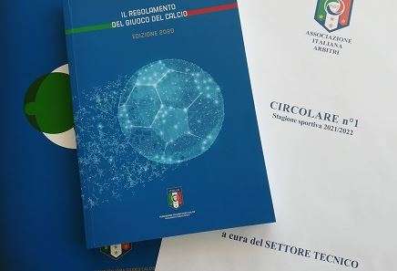

SABATO: concentrazione pre gara
"I giorni prima della partita sono un mix di concentrazione e ansia.
La mente è focalizzata sulla gara, ogni dettaglio è importante.
Ripassi il regolamento, ancora e ancora, come un mantra.
Cerchi di prevedere ogni possibile scenario, ogni situazione critica.
L'ansia si insinua, ti fa dubitare delle tue capacità, ti fa pensare a cosa potrebbe andare storto.
Ma tu non cedi, ti concentri ancora di più. Studi le squadre, i giocatori, le tattiche.
Sei pronto a tutto.
Il ripasso del regolamento diventa un rituale, un modo per calmare i nervi e prepararti mentalmente.
Sai che la partita sarà difficile, che ci saranno momenti critici. La notte prima della partita, la mente è ancora sveglia, ripassa gli scenari, le decisioni da prendere.
Chiudi gli occhi e sogni che il fischietto non emetta suoni.
Nel tuo letto, nel mezzo della notte cerchi di assumere piena consapevolezza di te e di ciò che sei in grado di fare."
La mente è focalizzata sulla gara, ogni dettaglio è importante.
Ripassi il regolamento, ancora e ancora, come un mantra.
Cerchi di prevedere ogni possibile scenario, ogni situazione critica.
L'ansia si insinua, ti fa dubitare delle tue capacità, ti fa pensare a cosa potrebbe andare storto.
Ma tu non cedi, ti concentri ancora di più. Studi le squadre, i giocatori, le tattiche.
Sei pronto a tutto.
Il ripasso del regolamento diventa un rituale, un modo per calmare i nervi e prepararti mentalmente.
Sai che la partita sarà difficile, che ci saranno momenti critici. La notte prima della partita, la mente è ancora sveglia, ripassa gli scenari, le decisioni da prendere.
Chiudi gli occhi e sogni che il fischietto non emetta suoni.
Nel tuo letto, nel mezzo della notte cerchi di assumere piena consapevolezza di te e di ciò che sei in grado di fare."

⬅ Torna alla Home | Giorno successivo ➡